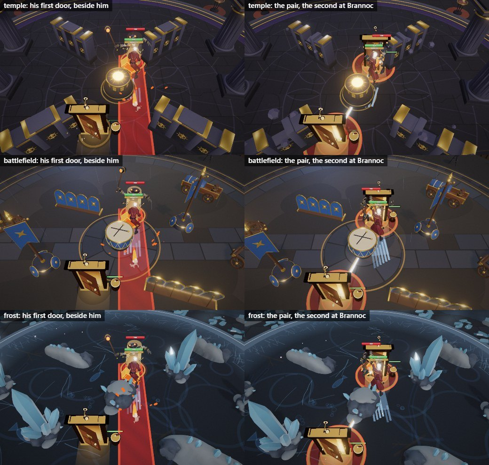

Wick: from 30% to 53%
Fight simulator, Wick against the six benchmark heroes, 2026-11-19. Target: 40–60% wins (shaded). Two fixes: the CPU stops shooting into his own doors (about 30% → about 40%), then Key Toss 78 → 88 damage (→ 53%).
What was wrong
In the game

Win rate, step by step
The dark line on each bar is how far chance alone can move it (more fights, shorter line). The CPU fixes alone settle him at about 40%, the very edge of the band; the one number change puts him near the middle.
How often his key hits
| Run | Keys a fight | Keys that hit |
|---|---|---|
| Before | 6.3 | 62% |
| Test: never places a door | 6.9 | 73% |
| Holds a shot his door would swallow | 6.1 | 71% |
| And the first door to his side | 6.3 | 72% |
| Now (also rising doors counted, key 88) | 6.0 | 73% |
Against each benchmark hero, now
| Foe | Before (16 fights) | Now (64 fights) |
|---|---|---|
| Brannoc | 56% | 77% |
| Kaia | 19% | 55% |
| Sirix | 19% | 55% |
| Isolde | 31% | 50% |
| Cantor | 44% | 44% |
| Oblivion | 19% | 38% |
One foe at 16 or 64 fights swings by ±12–25 points; only the total is firm.